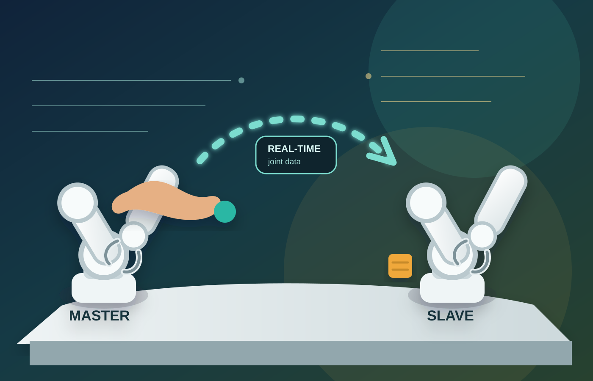

직접 조작
사용자는 조이스틱이나 코드 입력 없이 마스터 로봇팔을 손으로 움직여 원하는 동작을 만듭니다.
LeRobot SO-101 기반 로봇팔 제어 프로젝트
직접 손으로 조작용 로봇팔을 움직이면 대상 로봇팔이 관절 움직임을 실시간으로 복제하는 마스터-슬레이브 텔레오퍼레이션 시스템입니다.

Project Overview
사용자는 조이스틱이나 코드 입력 없이 마스터 로봇팔을 손으로 움직여 원하는 동작을 만듭니다.
각 관절의 위치 변화가 슬레이브 로봇팔로 전달되어 집기, 이동, 놓기 동작을 즉시 따라 합니다.
로봇 제어를 어려운 프로그래밍이 아니라 몸으로 이해하는 실습형 인터페이스로 바꿉니다.
System Architecture
사람이 마스터 로봇팔을 원하는 자세로 움직입니다.
SO-101의 각 관절 위치와 그리퍼 상태를 읽습니다.
측정된 움직임을 제어 신호로 변환해 전달합니다.
슬레이브 로봇팔이 물체를 집고 옮기는 동작을 수행합니다.
Hands-on Experience
이 시스템은 로봇 제어의 진입 장벽을 낮추는 데 초점을 맞췄습니다. 사용자는 물체를 집고, 옮기고, 원하는 위치에 놓는 과정을 직접 수행하면서 센서 입력, 제어 신호, 로봇 동작의 관계를 자연스럽게 이해할 수 있습니다.
Applications
작업자가 위험 구역 밖에서 로봇팔을 직관적으로 원격 조작합니다.
집기와 분류 동작을 빠르게 시연하고 반복 작업으로 확장합니다.
사용자의 움직임을 로봇 동작으로 연결해 보조 장치 학습에 활용합니다.
고온, 오염, 협소 공간처럼 사람이 직접 들어가기 어려운 환경에 적용합니다.